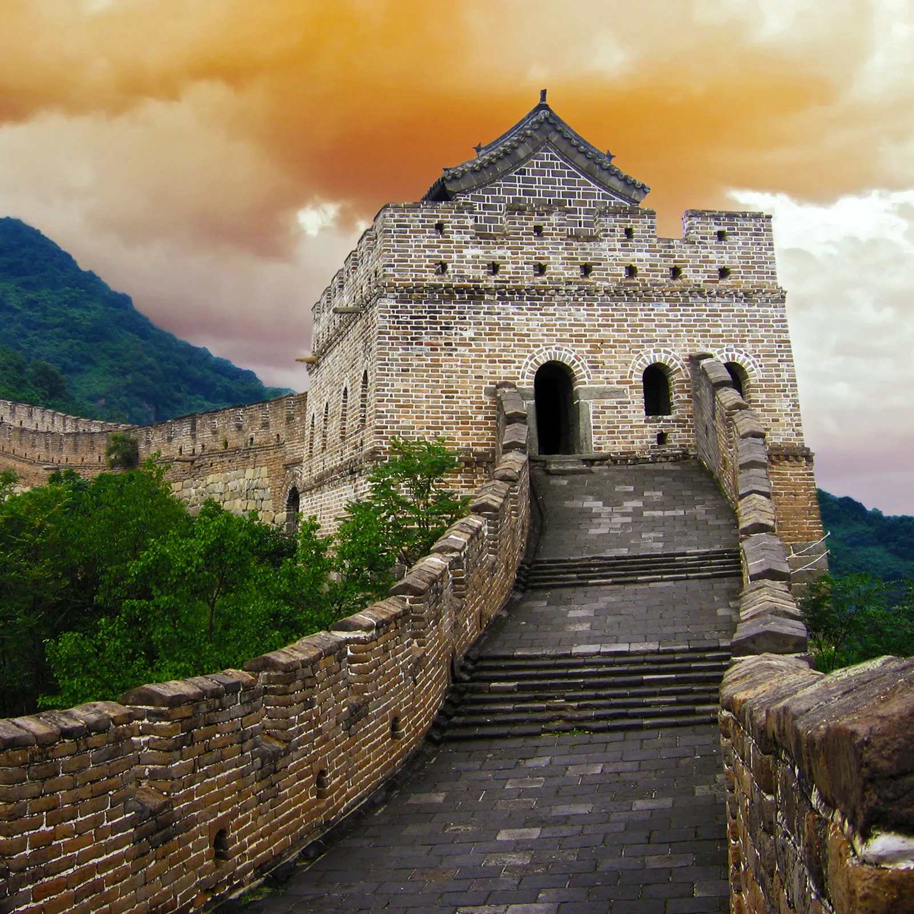
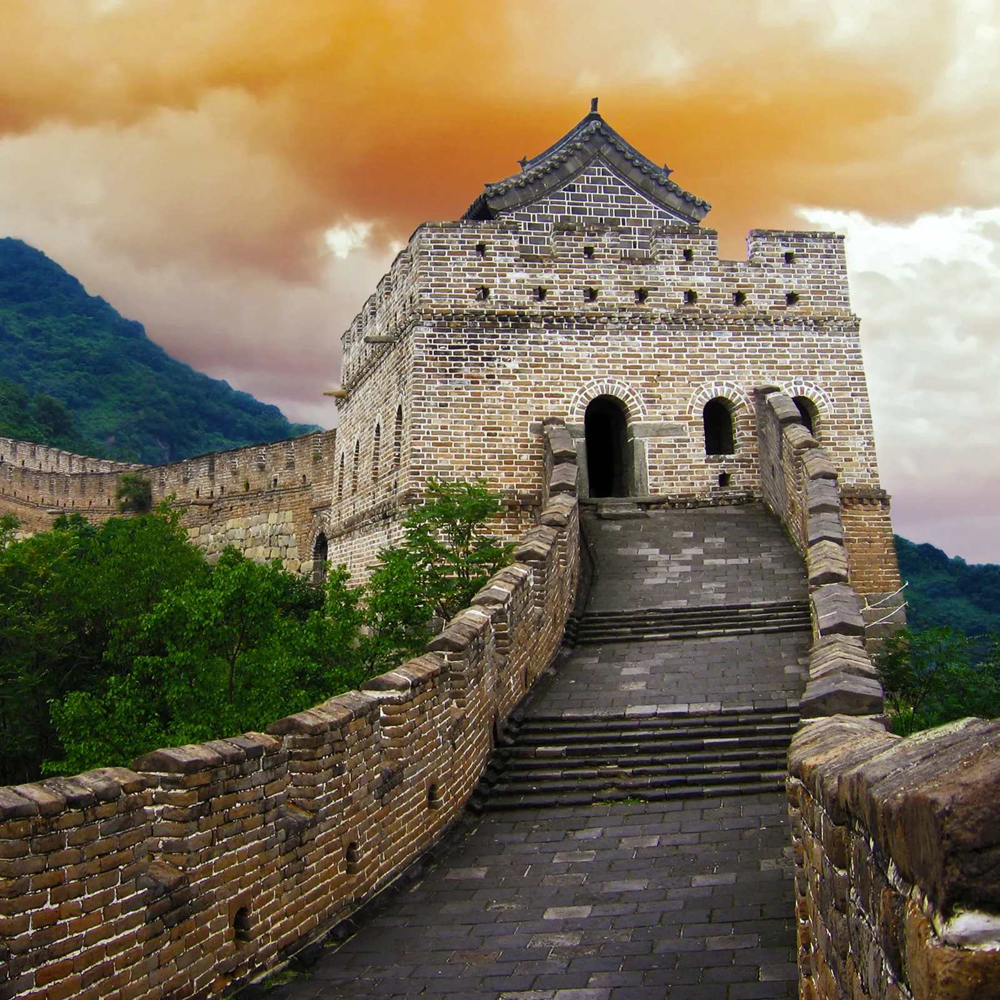

Watch Out Video
Did You Know ?
The Great Wall of China is one of the biggest structures ever made by humans. The ancient Chinese built the wall to protect against invading armies. Today it is a tourist attraction and a symbol of China.Workers constructed several different walls in northern China and southern Mongolia beginning in the 600s bce. Some of the walls run parallel to each other. In the 200s bce the Chinese joined some of the sections together to make one long wall. Since that time the wall has been extended and rebuilt many times. The main wall that exists today winds across the Chinese countryside for some 5,500 miles (8,850 kilometers).
Different sections of the wall were built of dirt, stone, or brick. Its height ranges from 15 to 30 feet (5 to 9 meters), and its width is 15 to 25 feet (5 to 8 meters). Many watchtowers rise above the wall, and a roadway runs along the top. The main wall has openings at positions that were important in ancient times, such as places where the wall crossed trade routes. Each opening had a gate with a watchtower on top.
The Chinese stopped using the wall for protection in the mid-1600s. The wall fell into ruin, but in the 1900s parts of it were rebuilt. The Great Wall was designated a UNESCO World Heritage site in 1987.